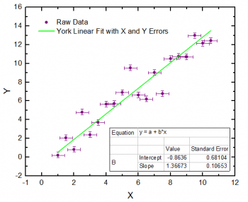

Xエラー付き線形フィットダイアログ(Proのみ)
Xエラー付き線形フィットダイアログ
Xエラー付き線形フィットダイアログはXエラー付の線形フィットを行うことが出来ます。

このツールは、X方向Y方向の両方にエラーがある場合の、実際の実験データ対して、より実践的にXとY方向の両方のエラーを二乗合計値が最小になるように計算します。
サポート情報
OriginのXエラー付きの線形フィットダイアログは、ワークシートあるいはグラフをアクティブにして開くことができます。メインメニューから以下のように選択します。
- 解析：フィット：線形フィット：Xエラーあり（ダイアログを開く...）をクリックします。
関連情報：
再計算
| 再計算
|
分析結果の再計算を制御します。
詳細情報は、 分析結果の再計算をご覧下さい。
|
入力
複数データフィットモード
| 複数データフィットモード
|
このオプションは入力データセットが複数ある場合のみ利用できます。
- 独立フィット - 統合レポート
- 入力データセットは別々にフィットされます。レポートは1つのシートに集約されます。
- 独立フィット - 統合レポート
- 入力データセットは別々にフィットされます。レポートは異なるワークシートに出力されます。
- 連結フィット
- すべての入力データセットは、連結され、1つの曲線としてフィットされます。
|
入力データ
| 範囲
|
入力XYデータ範囲を指定します。
X
- 曲線のX列
Y
- 曲線のY列
Yエラー
- Yエラー列
Xエラー
- Xエラー列
行
- フィットするX列の範囲を指定します。行が行によるまたは Xによるにセットされているとき、開始と終了 のテキストボックスを使って、フィットする範囲を指定します。
-
- フィットするデータセットのすべての行を指定します。
- 行インデックスでX列の範囲を指定します。
- X値でX列の範囲を指定します。
- グラフまたはワークシートのどちらかから複数のXYデータセットをフィットするとき、行範囲をすべてに適用 を使って、同じX行範囲をすべての入力データに適用します。範囲1の入力列の行範囲を指定し、範囲1の右にある
 ボタンをクリックし、そしてコンテキストメニューから行範囲をすべてに適用をクリックします。 ボタンをクリックし、そしてコンテキストメニューから行範囲をすべてに適用をクリックします。
詳細情報は、 入力データの指定をご覧下さい。
|
フィット制御
| 計算法
|
- York
- Least-squares fitting of a straight line で述べている D. York の計算方法を使います。
- FV
- Fitting straight lines with errors on both coordinates で述べているG. Fasano and R. Vio の計算方法を使います。
- Deming
- 最尤推定の計算手法を使います。
|
| XおよびYエラーの相関
|
0と1の値の範囲でXおよびYエラーの相関を指定します。XerrとYerrの間に関連がない場合、0に設定できます。このオプションは、計算法がYorkの場合に利用できます。
|
| Xの標準偏差
|
複数「Xの標準偏差」でXエラーの重みを指定します。Xの標準偏差とYの標準偏差の編集ボックスに入力した値の割合で、XエラーとYエラーの不等を決定します。このオプションは、数値手法がDemingのときのみ有効です。
|
| Yの標準偏差
|
複数「Yの標準偏差」でYエラーの重みを指定します。Xの標準偏差とYの標準偏差の編集ボックスに入力した値の割合で、XエラーとYエラーの不等を決定します。 このオプションは、数値手法がDemingのときのみ有効です。
|
| 無効な重み付けデータの扱い
|
- 重み付けデータに無効な値がある場合、エラーを返します。
- カスタム値で無効重み付けデータを置き換えます。
|
| カスタム重み
|
カスタム重みの値を設定します。カスタム値で置き換えを選択すると、このオプションを使うことができます。
|
値
| フィットパラメータ
|
出力する値を指定します。
- 値
- パラメータの値を出力します。
- 標準誤差
- パラメータの標準誤差を出力します。
以下の項目は、York と Deming手法のみについてです。
- LCL
- 下側信頼限界
- UCL
- 上側信頼限界
- 曲線の信頼水準(%)
- 回帰に対する信頼水準
- t値
- ｔ検定値のパラメーター
- Prob>|t|
- ｐ値のパラメーター
- CI 半幅
- 信頼区間の半幅
詳細については、パラメータをご覧下さい。
|
| フィット統計
|
以下の項目は、York と Deming手法のみについてです。
- ポイント数
- フィッティングポイントの総数
- 自由度
- モデル自由度
- カイ二乗での検定
- 自由度あたりカイ二乗値は、自由度で除算された残差平方和と等しくなります。
- 残差平方和
- 残差平方和 (RSS), または平方誤差の総和
- ピアソンのｒ
- ピアソンの相関係数
- Root MSE(SD)
- 残差標準偏差または平均平方誤差の平方根
- 共分散行列
- 共分散行列を出力するか指定します。
- 相関行列
- 相関行列を出力するか指定します。
|
出力
| グラフ
|
結果表
- ソース/レポートグラフにフィット結果を表示するか指定します。
-
- グラフにフィット結果表を追加しません。
- ソースグラフにフィット結果表を追加します。入力データがグラフの場合に使用できます。
- レポートシートの埋め込みグラフにフィット結果表を追加します。レポートシートに1つ以上のグラフがある場合、表は最初のグラフに追加されます。
- ソースグラフとレポートシートグラフの両方に結果表を追加します。
- 表スタイルテンプレート
- 結果のグラフで使っている、表スタイルテンプレートを指定します。
- 表中の値
- 表で表示する値を指定します。
グラフを縦列に配置
- 指定した列数でグラフを配置します。
グラフ中の同じ形式のプロットを配列
- 同じ形式のグラフを統合します。
1つのグラフ中に残りのプロットを配置
- このチェックボックスが選択されている場合、全ての残りのプロットは1つのグラフ内に配置されます。
フィット結果シートの配置
- フィット結果ワークシートの配置を制御します。リストは、複数のデータセットが入力されている場合にのみ有効です。
- 複数Yのフィット結果を一つの結合されたシートに表示します。
- 複数Yのフィット結果を異なるシートに表示します。
|
| データセット識別子
|
出力でソースデータのラベルの付け方を指定します。
- 識別子
- 次をソースデータの認識に使用します。プロットしたデータで線形フィットを行うとき（例：グラフウィンドウをアクティブにしてフィット）には、 プロット凡例 オプションが追加されます。
-
- ソースデータを参照するには 範囲シンタックス を使います。
- 存在する場合はロングネームを使用し、ない場合はショートネームを使用します。
- 列のショートネームを使用します。
- シート表示名を使用します。 ( シートの名前とコメントダイアログ を参照してください）
- 存在する場合はロングネームを使用し、ない場合はショートネームを使用します。
- 列のショートネームを使用します。
- 列ロングネームを使用します。
- 列の単位を使用
- 列のコメントを使用
- アクティブなウィンドウがグラフウィンドウの時に設定できます。プロットがフィットされるときの凡例ラベルが使われます。
- ソースデータを認識するためにカスタム表記を使用します。このオプションは、識別子を入力するために カスタム識別子 ボックスを追加します。この識別子表記の入力には、これらのトピックスをご参照ください。
- 属性
- Xデータセット、Yデータセットなどを指定し、識別子 を設定します。＜自動＞を選択して、独立変数（大抵の場合Y列）を使います。全て識別子に対して、この操作ができるわけではありません。
- フラットシートに識別子を表示
- 多くのOriginの分析操作では、折りたたみ式分析レポートシートの他に通常のワークシートにもデータが出力されます。このフラットシートで識別子を使用するか指定します。
|
| レポート表
|
- ブック
- 線形フィット表を出力するワークブックを指定します。
- <なし>
- 線形フィット表をどこにも出力しません。
- <自動>
- 線形フィット表を出力するワークブックを自動で決定します。
- <ソース>
- ソースデータのあるワークブックに線形フィット表を出力します。
- <新規>
- 新しいワークブックを作成して、線形フィット表を出力します。
- <既存のもの>
- ワークブックオーガナイザーが開き、線形フィット表を出力するための既存のワークブックを選択します。
- ブック名
- これは、ブックに<新規>が選択されているときのみ編集できます。線形フィット表を出力するワークブックの名前を指定できます。その他の場合、線形フィット表の出力に使用されるブックの名前を表示します。
- シート
- これは編集できません。このツールは、線形フィット表を出力するために宛先ワークブックに新しいワークシートを作成します。そのため、シートは常に<新規>です。
- シート名
- 線形フィット表を出力するワークシート名を指定できます。
- 結果ログ
- 結果ログに結果を出力するかどうかを指定します。
- スクリプトウィンドウ
- スクリプトウィンドウに結果を出力するかどうかを指定します。
- ノートウィンドウ
- 結果を出力するノートウィンドウの名前を指定します。<なし> がここに入力されると、結果はどのノートウィンドウにも出力されません。
|
| フィット曲線
|
フィット曲線データの出力先を指定します。
- ブック
- 目的のワークブックを指定します。
- <自動>
- Originが自動で出力ワークブックを決定します。
- <ソース>
- 元データのワークブックを使います。
- <レポート>
- フィットレポートを持つワークシートを使います。
- <新規>
- 新しいワークブックを使います。
- <既存のもの>
- 既存のワークシートを選び、出力先として使います。
- ブック名
- 出力するワークブック名
- シート
- 目的のワークシートを指定します。
- <ソース>
- 元データがあるワークシートを出力先シートとして使います。
- <新規>
- 新しいワークシートを作成し、出力先として使います。
- <既存のもの>
- 既存のワークシートを選択し、出力先として使います。
- シート名
- 出力するワークシート名。
|
| フィットの残差
|
残差値に対するワークブックとワークシートを指定します。
- ブック
- 目的のワークブックを指定します。
- <フィット結果>
- フィットした値を持つワークシート
- <ソース>
- 元データのワークブックを使います。
- <新規>
- 新しいワークブックを使います。
- <既存のもの>
- 既存のワークブックを使います。
- ブック名
- 出力するワークブック名
- シート
- 目的のワークシートを指定します。
- <フィット結果>
- フィットした値を持つワークシート
- <new>
- 新しいワークシート
- <既存のもの>
- 指定した既存のワークシート
- シート名
- 出力するワークシート名。
|
| 特定X/Yの検索テーブルの出力
|
特定X/Yの検索テーブルの出力先を指定します。このブランチは、 YからXを検索 チェックボックスまたは XからYを検索 チェックボックスのどちらかが選択されている場合のみ利用できます。以下のX/Y検索もご覧ください。
- ブック
- 目的のワークブックを指定します。
- <フィット結果>
- フィットした値を持つワークシート
- <ソース>
- ソースデータを持つワークブック
- <new>
- 新しいワークブック
- <既存のもの>
- 指定した既存のワークブック
- シート
- 目的のワークシートを指定します。
- <フィット結果>
- フィットした値を持つワークシート
- <新規>
- 新しいワークシート
- X検索のシート名
- これは、シートで新規が選択されているときのみ利用できます。編集ボックスで、X検索表として使うワークシートを指定します。
- Y検索のシート名
- これは、シートで新規が選択されているときのみ利用できます。編集ボックスで、Y検索表として使うワークシートを指定します。
|
| オプショナルなレポートテーブル
|
レポートワークシートに出力する項目をオプションで指定します。
- 備考の方程式
- レポートテーブルの関数式の形式を指定します。
- 関数式をパラメータ名で出力します。
- フィットしたパラメータの値で関数式を出力します。
- ノート
- ノート表
- 入力データ
- 入力データの表
- マスクされたデータ
- マスクデータのテーブル
- 欠損値
- 欠損値のテーブル
|
フィット曲線のプロット
| レポート表中にプロット
|
このチェックボックスが選択されていると、フィット曲線がレポートテーブルに追加されます。
|
| ソースグラフ上にプロットする
|
このオプションは入力データセットがグラフの場合のみ利用できます。元のグラフにフィットした曲線を追加するかどうかを指定するのに使うことができます。
- フィット曲線は元のグラフに追加されません。
- フィット曲線が元のグラフに追加されません。
- フィット曲線とグラフタイプドロップダウンリストで指定したプロットが元のグラフに追加されます。
- このオプションは入力データセットがグラフで、 連結フィットモードが選択されている場合に利用できます。
|
| 残差 vs. 独立のプロット積み重ね
|
フィット曲線に残差 vs. 独立のプロットを積上げます。
|
| ソースグラフの凡例を更新
|
元のグラフの凡例を更新するかどうか指定するのにチェックを付けます。
|
| ソースグラフの色を複数プロットに使う
|
ソースグラフの色設定を複数のフィット曲線を表示する際に使用するか指定するにはチェックを付けてください。
|
| X データタイプ
|
フィット曲線のX値を生成する方法を指定します。
- フィット曲線のX値が等間隔な線形スケールにプロットされます。
- フィット曲線のX値が対数スケールにプロットされます。
- フィット曲線のX値は入力X値と同じになります。
- フィット曲線のＸ値はソースグラフのスケールタイプを元に作図されます。
- このオプションは入力データセットがグラフの場合のみ利用できます。
- ポイント
- このオプションは、「Xデータタイプ」が「均一X」または「対数間隔」の場合のみ利用できます。フィット曲線の合計データポイント数を指定します。
- Range
- このオプションは、Xデータタイプが均一Xまたは対数間隔の場合のみ利用できます。これは、フィット曲線のX値の範囲を指定します。次のオプションから1つを選択します。
- 範囲マージン
- このオプションは、Xデータタイプが均一Xまたは対数間隔で、範囲がX範囲 ± ％になっている場合に利用できます。フィット曲線を拡張する範囲の余白を指定するのに使用します。
- 最小/最大
- このオプションは、Xデータタイプが均一Xまたは対数間隔で、範囲がカスタムになっている場合に利用できます。この2つのテキストボックスで、フィット曲線の最小と最大のX値を指定します。
|
| 信頼帯
|
このチェックは、信頼帯が2つの線とその間の塗りつぶし部分としてフィット曲線に追加されることを示します。作図の詳細ダイアログのグラフの線タブで信頼帯の塗りつぶしに関する設定を編集できます。
詳細情報は、信頼帯と推定帯を確認してください。
|
| 曲線の信頼水準(%)
|
信頼帯と予測帯の信頼水準を指定します。.
|
X/Y検索
このブランチを使って、X/Y検索テーブルを出力するかどうかを指定します。XからYを検索テーブルは、与えられた独立変数Xの値から対応する従属変数Yの値を取得します。YからXを検索テーブルは、与えられた従属変数Yから対応する独立変数Xの値を取得します。
詳細は、X/YからY/Xを検索 – 標準曲線をご覧下さい。
| YからXを検索
|
YからXを検索表を作成します。
|
| XからYを検索
|
XからYを検索表がを作成します。
|
残差プロット
このブランチのオプションを使って、残差プロットをカスタマイズすることができます。詳細情報は、 残差分析をご覧下さい。
| 残差プロット
|
このブランチのオプションを使って、残差プロットをカスタマイズすることができます。
選択した残差の種類によって、6つの残差プロットを出力することができます。
- 残差 vs. 独立のプロット
- 残差プロットのヒストグラム
- 残差 vs. 予測値のプロット
- 残差 vs. データ順位のプロット
- 残差のラグプロット
- 残差の正規確率プロット
|